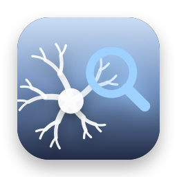
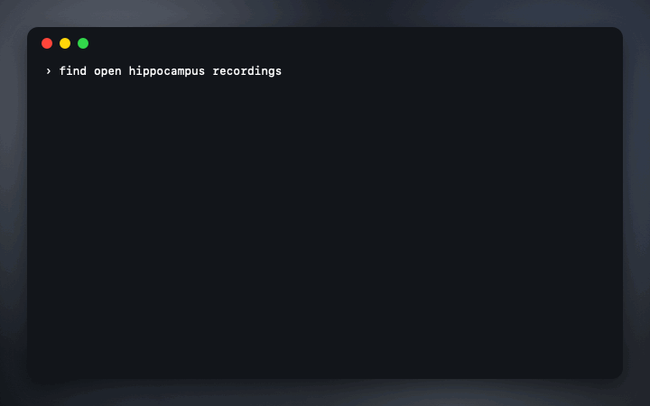

brainhound
Search and read public neuroscience data from your agent. One search across DANDI, OpenNeuro and NeuroMorpho, NWB files read where they sit, and a license and citation with every dataset.

free · open source · mcp server, cli and skills · read-only · no dependencies
Find it, open it, cite it
- search_datasets: DANDI, OpenNeuro and NeuroMorpho at once, each result with its license.
- nwb_summary, nwb_read, nwb_table: what's in an NWB session, slices of its data and rows of its tables, read remotely. An 8.4 GB file took 1.3 MB.
- dataset_info: description, species, techniques, authors, license and a ready-to-paste citation.
- brain_region and brain_atlases: Allen region acronyms, ids and parents, and BrainGlobe's atlases.
- neuron_morphology: a NeuroMorpho neuron's morphometry, SWC file and the three citations it asks for.
- Four skills that teach an agent NWB conventions, region matching and fair morphology comparisons.
Set up in one line
- Claude Code:
claude mcp add brainhound -- npx -y github:stanczykwyatt/brainhound#v0.1.0 serve - Codex
~/.codex/config.toml:[mcp_servers.brainhound]withcommand = "npx",args = ["-y", "github:stanczykwyatt/brainhound#v0.1.0", "serve"] - Cursor, Gemini CLI and Claude Desktop: the same command under
mcpServers. - Skills:
npx skills add stanczykwyatt/brainhound
Questions
How can I read an NWB file on DANDI without downloading it?
brainhound reads NWB files where they sit on DANDI's servers with HTTP range requests, fetching only the file's index and the chunks a slice touches. Summarizing an 8.4 GB recording read 1.3 MB. Use nwb_summary, nwb_tree, nwb_read and nwb_table, or brainhound summary in a terminal.
Is there an MCP server for DANDI, OpenNeuro and NeuroMorpho?
Yes. brainhound is a free, open-source MCP server that searches DANDI, OpenNeuro and NeuroMorpho.Org at once, and works with Claude Code, Codex, Cursor, Gemini CLI and any other MCP client. Add it with the command npx -y github:stanczykwyatt/brainhound#v0.1.0 serve.
How do I find the license and citation for a DANDI dataset?
Run dataset_info, or brainhound info dandi:000003 in a terminal. It shows the dandiset's license and DANDI's ready-made citation with the version DOI. It does the same for OpenNeuro datasets and NeuroMorpho neurons.
How do I look up an Allen brain region acronym?
brain_region finds a region by acronym or name in the Allen ontology for mouse, human or developing mouse, and gives its id, full name, color and chain of parent regions, such as root > grey > CH > CTX > CTXpl > HPF > HIP > CA > CA1.
Is it safe to give a coding agent?
Every tool only reads. brainhound writes nothing to disk, reaches only six fixed archive hosts over https, opens local files only inside a folder you name, and has no dependencies.
Which HDF5 and NWB files can it read?
Files written with HDF5's default settings, as pynwb, h5py and MatNWB write them, and files in the newest HDF5 format, with gzip, shuffle and fletcher32. Other compression filters and NWB files stored as Zarr say so plainly.